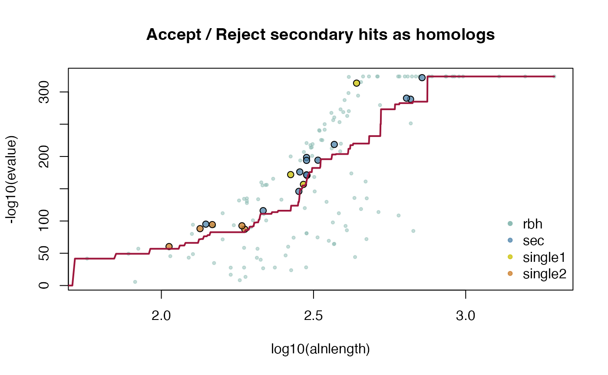

CRBHits Basic Vignette
Kristian K Ullrich
2021-05-01
Source:vignettes/V01CRBHitsBasicVignette.Rmd
V01CRBHitsBasicVignette.RmdCRBHit Basic Vignette
- includes CRBHit pair calculation
- includes CRBHit pair filtering
- includes Longest Isoform selection
- includes Codon alignments
- includes Ka/Ks calculations
Table of Contents
- Installation
- Conditional Reciprocal Best Hits - Algorithm
- Ka/Ks Calculations
- References
CRBHits is a reimplementation of the Conditional Reciprocal Best Hit (CRBH) algorithm crb-blast in R.
The Reciprocal Best Hit (RBH) approach is commonly used in bioinformatics to show that two sequences evolved from a common ancestral gene. In other words, RBH tries to find orthologous protein sequences within and between species. These orthologous sequences can be further analysed to evaluate protein family evolution, infer phylogenetic trees and to annotate protein function.
The CRBH algorithm builds upon the traditional RBH approach to find additional orthologous sequences between two sets of sequences.
CRBH uses the sequence search results to fit an expect-value (e-value) cutoff given each RBH to subsequently add sequence pairs to the list of bona-fide orthologs given their alignment length. The sequence similarity results can be filtered by common criteria like e-value, query-coverage and more. If chromosome annotations are available for the protein-coding genes (protein order), this information can be directly used to assign tandem duplicates before conducting further processing steps.
CRBHits features downstream anaylsis like batch calculating synonymous (Ks) and nonsynonymous substitutions (Ka) per orthologous sequence pair. The codon sequence alignment step consist of three subtasks, namely coding nucleotide to protein sequence translation, pairwise protein sequence alignment calculation and converting the protein sequence alignment back into a codon based alignment.
Note:
In this Vignette the lastpath is defined as vignette.paths[1], the kakscalcpath as vignette.paths[2] and the dagchainerpath as vignette.paths[3] to be able to build the Vignette.
However, once you have compiled last-1219, KaKs_Calculator2.0 and DAGchainer with the functions make_last(), make_KaKs_Calculator2() and make_dagchainer() you won’t need to specify the paths anymore. Please remove them if you would like to repeat the examples.
## load vignette specific libraries
library(CRBHits)
suppressPackageStartupMessages(library(Biostrings))
suppressPackageStartupMessages(library(tidyverse))
suppressPackageStartupMessages(library(gridExtra))
suppressPackageStartupMessages(library(curl))
## compile LAST, KaKs_Calculator2.0 and DAGchainer for the vignette
vignette.paths <- make_vignette()1. Installation
See the R package page for a detailed description of the install process and its dependencies https://mpievolbio-it.pages.gwdg.de/crbhits/.
## see a detailed description of installation prerequisites at
## https://mpievolbio-it.pages.gwdg.de/crbhits/
library(devtools)
## from gitlab
install_gitlab("mpievolbio-it/crbhits", host = "https://gitlab.gwdg.de",
build_vignettes = TRUE, dependencies = FALSE)
## from github
install_github("kullrich/CRBHits", build_vignettes = TRUE, dependencies = FALSE)CRBHits needs LAST, KaKs_Calculator2.0 and DAGchainer to be installed before one can efficiently use it.
All prerequisites (LAST, KaKs_Calculator2.0, DAGchainer) are forked within CRBHits and can be compiled for Linux/Unix/macOS with the functions make_last(), make_KaKs_Calculator2() and make_dagchainer().
For the windows platform the user needs to use e.g. https://www.cygwin.com/ to be able to compile the prerequisites.
library(CRBHits)
## compile last-1219
make_last()
## compile KaKs_Calculator2.0
make_KaKs_Calculator2()
## compile DAGchainer
make_dagchainer()2. Conditional Reciprocal Best Hits - Algorithm

Figure: Overview of the cds2rbh() function
The CRBH algorithm was introduced by Aubry S, Kelly S et al. (2014) and ported to python shmlast (Scott C. 2017) which benefits from the blast-like sequence search software LAST (Kiełbasa SM et al. 2011).
The CRBH algorithm implementation consists of three steps which are explained in more detail in the following subsections.
- step: sequence similarity search (last)(#crbhstep1)
- step: filter hits and extract Reciprocal Best Hits (RBHs)(#crbhstep2)
- step: fitting RBHs and get Conditional Reciprocal Best Hits (CRBHs)(#crbhstep3)
All of these steps are combined in either the cds2rbh() function (R vector input) or the cdsfile2rbh() function (file input).
To activate/deactivate specific options use the parameters @param given and explained for each function (see ?cds2rbh() and ?cdsfile2rbh()).

Figure: Individual steps of the cds2rbh() function
2.1. 1. step: sequence similarity search (last)
All further described steps are included in the cds2rbh() and cdsfile2rbh() function. The subsections will just explain in more detail what is happening with the input data.
2.1.1. Input: Coding Sequences (CDS)
CRBHits only takes coding nucleotide sequences as the query and target inputs.
Why? Because CRBHits is implemented to use the same input afterwards to calculate synonymous and nonsynonymous substitutions which must match the protein sequences used to find CRBHit pairs.
One can either use a DNAStringSet vector from the Biostrings R package with the cds2rbh() function or use raw,gzipped or URL coding sequences fasta files as inputs with the cdsfile2rbh() function.
CRBHits uses either the function cdsfile2aafile() to translate a coding sequence fasta file into its corresponding protein sequence fasta file or cds2aa() to translate a DNAStringSet into a AAStringSet. Thereby it removes all sequences that are not a multiple of three which can not be parsed correctly.
Note: The user can easily check if all coding sequences would be a multiple of three or rely on the input files generated by other sources.
## example how to check coding sequences if all are a mutiple of three
## load CDS file
cdsfile <- system.file("fasta", "ath.cds.fasta.gz", package = "CRBHits")
cds <- Biostrings::readDNAStringSet(cdsfile)
## the following statement should return TRUE, if all sequences are a mutiple of three
all(Biostrings::width(cds) %% 3 == 0)
#> [1] TRUE2.1.2. Get Longest Isoform from NCBI or ENSEMBL Input (optional)
It is also possible to use an URL to directly access coding sequences from NCBI or ENSEMBL and reduce this input to the longest annotated isoform.
## example how to access CDS from URL and get longest isoform
## get coding sequences for Homo sapiens from NCBI
HOMSAP.cds.NCBI.url <- paste0(
"https://ftp.ncbi.nlm.nih.gov/genomes/all/GCF/000/001/405/",
"GCF_000001405.39_GRCh38.p13/",
"GCF_000001405.39_GRCh38.p13_cds_from_genomic.fna.gz")
HOMSAP.cds.NCBI <- Biostrings::readDNAStringSet(HOMSAP.cds.NCBI.url)
## reduce to the longest isoform
HOMSAP.cds.NCBI.longest <- isoform2longest(HOMSAP.cds.NCBI, "NCBI")
## get coding sequences for Homo sapiens from ENSEMBL
HOMSAP.cds.ENSEMBL.url <- paste0(
"ftp://ftp.ensembl.org/pub/release-101/fasta/",
"homo_sapiens/cds/Homo_sapiens.GRCh38.cds.all.fa.gz")
HOMSAP.cds.ENSEMBL.file <- tempfile()
download.file(HOMSAP.cds.ENSEMBL.url, HOMSAP.cds.ENSEMBL.file, quiet = FALSE)
HOMSAP.cds.ENSEMBL <- Biostrings::readDNAStringSet(HOMSAP.cds.ENSEMBL.file)
## reduce to the longest isoform
HOMSAP.cds.ENSEMBL.longest <- isoform2longest(HOMSAP.cds.ENSEMBL, "ENSEMBL")
## get help
#?isoform2longestNote: It is also possible to obtain and select the longest/primary isoform from CDS Input sources other than NCBI or Ensembl. This can be achieved by parsing a GTF/GFF3 file. This special case is handled in the CRBHits KaKs Vignette under point 1.4.2.
2.1.3. Sequence Similarity Search
The blast-like software LAST is used to compare the translated coding sequences against each other and output a blast-like output table including the query and target length.
Note: Classical RBH can be performed by disabling the crbh @paramof the cds2rbh() or cdsfile2rbh() function.
## example how to get CRBHit pairs from two CDS using classical RBH
## define CDS file1
cdsfile1 <- system.file("fasta", "ath.cds.fasta.gz", package = "CRBHits")
## define CDS file2
cdsfile2 <- system.file("fasta", "aly.cds.fasta.gz", package = "CRBHits")
## get CDS1
cds1 <- Biostrings::readDNAStringSet(cdsfile1)
## get CDS2
cds2 <- Biostrings::readDNAStringSet(cdsfile2)
## example how to perform classical RBH
ath_aly_crbh <- cds2rbh(cds1, cds2, crbh = FALSE,
lastpath = vignette.paths[1])
## show summary
summary(ath_aly_crbh)
#> Length Class Mode
#> crbh.pairs 3 data.frame list
#> crbh1 16 data.frame list
#> crbh2 16 data.frame list
## get help
#?cds2rbhLike shmlast, CRBHits plots the fitted model of the CRBH e-value based algorithm. The CRBH algorithm can be performed and visualized as follows:
## example how to get CRBHit pairs using one thread and plot CRBHit algorithm fitting curve
## example how to perform CRBH
ath_aly_crbh <- cds2rbh(cds1, cds2, plotCurve = TRUE,
lastpath = vignette.paths[1])
## show summary
summary(ath_aly_crbh)
#> Length Class Mode
#> crbh.pairs 3 data.frame list
#> crbh1 16 data.frame list
#> crbh2 16 data.frame list
#> rbh1_rbh2_fit 1 -none- function
## get help
#?cds2rbhBoth, cdsfile2rbh() and cds2rbh() function, return a list of three data.frame’s which contain the CRBH pairs ($crbh.pairs) retained, the query > target blast-like output matrix ($crbh1) and the target > query blast-like output matrix ($crbh2). For each matrix the $rbh_class indicates if the hit is a Reciprocal Best Hit (rbh) or if it is a conditional secondary hit retained because of RBH fitting (CRBH algorithm) (sec).
## example showing cds2rbh() results
## show dimension and first parts of retained hit pairs
dim(ath_aly_crbh$crbh.pairs)
#> [1] 211 3
head(ath_aly_crbh$crbh.pairs)
#> aa1 aa2 rbh_class
#> 1 AT1G01040.1 Al_scaffold_0001_3256 rbh
#> 2 AT1G01050.1 Al_scaffold_0001_128 rbh
#> 3 AT1G01080.3 Al_scaffold_0001_125 rbh
#> 4 AT1G01180.1 Al_scaffold_0001_114 rbh
#> 5 AT1G01190.2 Al_scaffold_0001_4419 rbh
#> 6 AT1G01260.3 Al_scaffold_0001_1326 rbh
## show first retained hit pairs for the query > target matrix
head(ath_aly_crbh$crbh1)
#> query_id subject_id perc_identity alignment_length mismatches
#> 1 AT1G01040.1 Al_scaffold_0001_3256 31.09 119 73
#> 2 AT1G01050.1 Al_scaffold_0001_128 100.00 213 0
#> 3 AT1G01080.3 Al_scaffold_0001_125 90.75 281 19
#> 4 AT1G01180.1 Al_scaffold_0001_114 92.88 309 19
#> 5 AT1G01190.2 Al_scaffold_0001_4419 33.33 81 51
#> 6 AT1G01260.3 Al_scaffold_0001_1326 44.94 89 41
#> gap_opens q_start q_end s_start s_end evalue bit_score query_length
#> 1 2 650 768 354 463 4.0e-06 47.0 1910
#> 2 0 1 213 1 213 1.5e-160 493.0 213
#> 3 3 1 275 1 280 5.9e-178 551.0 287
#> 4 1 1 306 1 309 2.9e-218 668.0 308
#> 5 2 450 529 91 169 9.6e-09 53.6 541
#> 6 1 409 497 251 331 3.4e-16 78.3 591
#> subject_length raw_score rbh_class
#> 1 540 99 rbh
#> 2 213 1110 rbh
#> 3 299 1240 rbh
#> 4 316 1505 rbh
#> 5 189 114 rbh
#> 6 451 170 rbh
## get the number of CRBHit classified as rbh and sec hit pairs
table(ath_aly_crbh$crbh1$rbh_class)
#>
#> rbh sec
#> 181 30
table(ath_aly_crbh$crbh2$rbh_class)
#>
#> rbh sec
#> 181 30If the @param crbh was set to TRUE, the CRBH algorithm was applied and the fitting function will also be returned. The fitting function can than be used for manual plotting as follows:
## example how to use the fitting function for manual plotting
## plot fitting function
curve(ath_aly_crbh$rbh1_rbh2_fit(x),
from = 1,
to = 1000,
xlab = "alnlength",
ylab = "-log10(evalue)",
main = "CRBH fitting")One can also specify if a hit pair which is only found in one direction should be retained, which will be classified as (single).
## example how to retain single direction secondary homologs
## get CRBHit pairs with keepSingleDirection = TRUE
ath_aly_crbh <- cds2rbh(cds1, cds2, plotCurve = TRUE,
keepSingleDirection = TRUE,
lastpath = vignette.paths[1])
2.2. 2. step: filter hits + RBH extraction
All further described steps are included in the cds2rbh() and cdsfile2rbh() function. The subsections will just explain in more detail what is happening with the input data.
Until now the hit pairs obtained via the sequence similarity searches were only filtered by default settings (e-value < 0.001). The following subsections will explain the default filters in more detail and show how one can create and apply custom filter on the hit pairs prior RBH extraction and fitting to obtain CRBHit pairs.
2.2.1. Filter blast-like output prior fitting
The following filters are already defined and can be used out of the box:
- evalue (
@paramevalue = 0.001) - query coverage (
@paramqcov = 0.0) - target coverage (
@paramtcov = 0.0) - protein identity (
@parampident = 0) - alignment length (
@paramalnlen = 0) - rost1999 (
@paramrost1999 = FALSE)
Taking the length of the obtained pairwise protein alignment one can calculate for each hit pair the query coverage as \(\frac{alignment length}{query length}\).
The data will be filtered with a query coverage of 50% using the @param qcov as follows: cds2rbh(..., qcov = 0.5)
## example how to filter prior crbh for query coverage of 50%
## get CRBHit pairs with direct query coverage filter
ath_aly_crbh <- cds2rbh(cds1, cds2, plotCurve = TRUE, qcov = 0.5,
lastpath = vignette.paths[1])
dim(ath_aly_crbh$crbh.pairs)
#> [1] 145 3
## get help
#?cds2rbhIn addition, the users can filter for the twilight zone of protein sequence alignments according to Rost B. (1999). This twilight zone indicates proteins, which might share a common ancestor (homologue genes) but have diverged from each other through time so that similarity is no longer detectable. Here, a certain alignment length and protein identity is at least necessary to indicate bona-fide homologues.
The following equation and plot will show how the relationship between alignment length and protein identity is defined for the rost1999 filter.
The implemented rost1999 filter uses equation2 of Rost B. (1999)
\[f(x_{\text{hit pair}}) = \cases {100 \text{ , for } L_{\text{hit pair}} < 11 \\ 480 * L^{-0.32 * (1 + e^{\frac{-L}{1000}})} \text{ , for } L_{\text{hit pair}} \leq 450 \\ 19.5 \text{ , for } L_{\text{hit pair}} > 450}\] , where \(x_{\text{hit pair}}\) is the expected protein identity given the alignemnet length \(L_{\text{hit pair}}\). If the actual \(pident_{\text{hit pair}} >= f(x_{\text{hit pair}})\) the hit pair is retained.
## detailed explanation for the Rost (1999) twilight-zone filter
## define eq2 from Rost (1999)
get_pident_by_length <- function(x){
eq2 <- function(L){
if(L <= 11){return(100)}
if(L <= 450){return(480*(L^(-0.32*(1+(exp(-L/1000))))))}
if(L > 450){return(19.5)}
}
return(unlist(lapply(x, eq2)))
}
## plot expected pident by alignment length using eq2 from Rost (1999)
curve(get_pident_by_length, 11, 500, pch = 20, xlab = "alignment length", ylab = "pident",
main = "expected protein identity (eq2; Rost B. 1999)")This twilight zone filter can be directly used by the @param rost1999 set to TRUE.
## example how to filter prior crbh for eq2 from Rost (1999)
## get CRBHit pairs with direct twilight-zone filter
ath_aly_crbh <- cds2rbh(cds1, cds2, plotCurve = TRUE, rost1999 = TRUE,
lastpath = vignette.paths[1])
dim(ath_aly_crbh$crbh.pairs)
#> [1] 208 3
## get help
#?cds2rbh
## get help
#?filter.alnlen
## get help
#?filter.eval
## get help
#?filter.pident
## get help
#?filter.qcov
## get help
#?filter.rost1999
## get help
#?filter.tcov2.2.2. Custom Filter
The user can also define its own filter function and apply it to the blast-like output prior fitting and calculating CRBHs as follows:
## example for a custom filters
## define custom filter for e.g. bit score (column 12)
myfilter1 <- function(rbh, value = 500.0){
return(dplyr::filter(rbh, bit_score >= value))
}
## define custom filter for e.g. corrected query_coverage
myfilter2 <- function(rbh, value = 0.5){
return(dplyr::filter(rbh, ((alignment_length-mismatches-gap_opens) / query_length) >= value))
}
## get CRBHit pairs with custom filter list
ath_aly_crbh <- cds2rbh(cds1, cds2, plotCurve = TRUE,
filter = list(myfilter1, myfilter2),
lastpath = vignette.paths[1])
dim(ath_aly_crbh$crbh.pairs)
#> [1] 58 32.2.3. Extract RBHs
As already explained in the Sequence Similarity Search section (#sequencesearch), both, cds2rbh() and cdsfile2rbh() function, return a list of three data.frame’s which contain the CRBHit pairs ($crbh.pairs) retained, the query > target blast-like output matrix ($crbh1) and the target > query blast-like output matrix ($crbh2). For each matrix the $rbh_class indicates if the hit is a Reciprocal Best Hit (rbh) or if it is a conditional secondary hit retained because of RBH fitting (CRBH algorithm) (sec).
To extract just the RBHs one can subset based on the rbh_class columns as follows:
## example to extract CRBHit pairs classified as rbh
## reduce to rbh_class rbh
data("ath_aly_crbh", package = "CRBHits")
head(dplyr::filter(ath_aly_crbh$crbh1, rbh_class == "rbh"))
#> query_id subject_id perc_identity alignment_length mismatches
#> 1 AT1G01040.1 Al_scaffold_0001_3256 31.09 119 73
#> 2 AT1G01050.1 Al_scaffold_0001_128 100.00 213 0
#> 3 AT1G01080.3 Al_scaffold_0001_125 90.75 281 19
#> 4 AT1G01180.1 Al_scaffold_0001_114 92.88 309 19
#> 5 AT1G01190.2 Al_scaffold_0001_4419 33.33 81 51
#> 6 AT1G01260.3 Al_scaffold_0001_1326 44.94 89 41
#> gap_opens q_start q_end s_start s_end evalue bit_score query_length
#> 1 2 650 768 354 463 4.0e-06 47.0 1910
#> 2 0 1 213 1 213 1.5e-160 493.0 213
#> 3 3 1 275 1 280 5.9e-178 551.0 287
#> 4 1 1 306 1 309 2.9e-218 668.0 308
#> 5 2 450 529 91 169 9.6e-09 53.6 541
#> 6 1 409 497 251 331 3.4e-16 78.3 591
#> subject_length raw_score rbh_class
#> 1 540 99 rbh
#> 2 213 1110 rbh
#> 3 299 1240 rbh
#> 4 316 1505 rbh
#> 5 189 114 rbh
#> 6 451 170 rbh
head(dplyr::filter(ath_aly_crbh$crbh2, rbh_class == "rbh"))
#> query_id subject_id perc_identity alignment_length mismatches
#> 1 Al_scaffold_0001_1000 AT1G04940.1 40.48 42 25
#> 2 Al_scaffold_0001_1004 AT1G10280.1 99.27 413 3
#> 3 Al_scaffold_0001_1120 AT1G08040.1 45.67 300 151
#> 4 Al_scaffold_0001_114 AT1G01180.1 92.88 309 19
#> 5 Al_scaffold_0001_1146 AT1G09740.1 32.54 169 105
#> 6 Al_scaffold_0001_1151 AT1G03300.1 33.28 673 377
#> gap_opens q_start q_end s_start s_end evalue bit_score query_length
#> 1 0 81 122 166 207 5.400000e-07 46.1 186
#> 2 0 1 413 1 413 9.881313e-324 980.0 413
#> 3 8 83 379 92 382 2.300000e-80 281.0 437
#> 4 1 1 309 1 306 8.100000e-218 668.0 316
#> 5 4 34 197 4 168 1.200000e-16 78.3 274
#> 6 19 7 611 3 671 1.300000e-85 304.0 611
#> subject_length raw_score rbh_class
#> 1 275 97 rbh
#> 2 413 2212 rbh
#> 3 383 629 rbh
#> 4 308 1505 rbh
#> 5 172 170 rbh
#> 6 671 681 rbh2.3. 3. step: fitting RBHs + get CRBHs
All further described steps are included in the cds2rbh() and cdsfile2rbh() function. The subsections will just explain in more detail what is happening with the input data.
2.3.1. CRBHit pairs - Fitting Parameter
The original implementation of the CRBH algorithm crb-blast.rb line 438-518 uses certain parameters for fitting the e-value against the alignment length.
In brief, for each retained reciprocal hit pair (RBH; after filtering) the e-value and the corresponding alignment length of a hit pair and its neighborhood is evaluated. The neighborhood is defined by a weighting parameter of the alignment length (default is set to @param fit.varweight = 0.1) and a minimum neighborhood alignment length (default is set to @param fit.min = 5).
For each unique alignment length \(L\) a value \(s_{L}\) is defined as the neighborhood alignment length as
\[s_{L} = \cases {\text{fit.min} \text{ , for } L * \text{fit.varweight} < \text{fit.min} \\ L * \text{fit.varweight} \text{ , for } L * \text{fit.varweight} \geq \text{fit.min}}\] E.g. for an alignment length of 100 and the default settings, \(s_{100} = 100 * 0.1 = 10\).
All RBHs, for which \(L-s_{L} \leq L_{RBH_i} \leq L + s_{L}\), in other words, for which their alignment lengths fall between 90 and 110 are than considered for fitting a cutoff at that alignment length using the mean of the \(-log10(evalue)\).
\[\text{cutoff}_{L} = \frac{1}{n} \sum_{i = 1}^{n}{\cases{324 \text{ , for } evalue_{RBH_i} = 0 \\ -log10(evalue_{\text{RBH}_i}) \text{ , for } evalue_{RBH_i} \ne 0}}\]
The user can now alter between mean and median using the @param fit.type = "mean" or fit.type = "median" to get alternative fitting curves.
## example how to get crbh from two coding fasta files using median fitting
## get CRBHit pairs with median fitting
ath_aly_crbh <- cds2rbh(cds1, cds2, plotCurve = TRUE,
fit.type = "median",
lastpath = vignette.paths[1])
## get help
#?cds2rbhAs described earlier, CRBHits features downstream anaylsis like batch calculating synonymous (Ks) and nonsynonymous substitutions (Ka) per orthologous sequence pair. The following sections will give more details about these downstream functionalities.
3. Ka/Ks Calculations

Figure: Overview of the rbh2kaks() function steps
The resulting CRBHs (see #crbhalgorithm) can be further processed to e.g. filtered for Tandem Duplicates (see CRBHits KaKs Vignette) and/or can be used to calculate Ka/Ks values for each CRBH pair (see #rbh2kaks and CRBHits KaKs Vignette).
All further described steps are included in the rbh2kaks() function. The subsections will just explain in more detail what is happening with the input data.
To activate/deactivate specific options use the parameters @param given and explained for each function (see ?rbh2kaks()).
Note: To be able to perform Tandem Duplicate Assignment with the rbh2kaks() function one needs to specify gene positions for both Input CDS (can be extracted automatically from NCBI or ENSEMBL Input (see cds2genepos() function)) and supply selfblast results for both Input CDS.

Figure: Individual steps of the rbh2kaks() function
3.1. Codon Alignments - cds2codonaln() Function
To be able to calculate synonymous (Ks) and non-synonymous (Ka) substitutions, one needs to use a codon alignment.
The cds2codonaln() function takes two single nucleotide sequences as input to obtain such a codon alignment. The function will convert the nucleotide sequences into amino acid sequences, align them with the help of the pairwiseAlignment() function from the Biostrings R package and convert this alignment back into a codon alignment.
## example to get a codon alignment
## define two CDS
cds1 <- Biostrings::DNAString("ATGCAACATTGC")
cds2 <- Biostrings::DNAString("ATGCATTGC")
## get codon alignment
cds2codonaln(cds1, cds2)
#> DNAStringSet object of length 2:
#> width seq names
#> [1] 12 ATGCAACATTGC cds1
#> [2] 12 ATG---CATTGC cds2
## get help
#?cds2codonalnThe user can alter some @param to change the alignment parameters, like type, substitutionMatrix, gapOpening and gapExtension costs as defined by the pairwiseAlignment() function from the Biostrings R package.
## example to alter the substitionMatrix and use the BLOSUM45 cost matrix
## for the codon alignment
## get codon alignemnt with BLOSUM45 cost matrix
cds2codonaln(cds1, cds2, substitutionMatrix = "BLOSUM45")
#> DNAStringSet object of length 2:
#> width seq names
#> [1] 12 ATGCAACATTGC cds1
#> [2] 12 ATG---CATTGC cds2The user can also remove gaps in the codon alignment.
## example to remove codon gaps
## get codon alignment with gaps removed
cds2codonaln(cds1, cds2, remove.gaps = TRUE)
#> DNAStringSet object of length 2:
#> width seq names
#> [1] 9 ATGCATTGC cds1
#> [2] 9 ATGCATTGC cds23.2. cds2kaks() Function
The Ka/Ks (dN/dS) values can be obtained either via the codon model of Li WH. (1999) implemented in the R package seqinr or the model Yang Z and Nielson R. (2000) implemented in KaKs_Calculator2.0 (see Quick Installation how to compile the prerequisites).
The cds2kaks() function takes two single nucleotide sequences as input to obtain a codon alignment and calculate Ka/Ks.
## calculate Ka/Ks on two CDS
## load example sequence data
data("ath", package="CRBHits")
data("aly", package="CRBHits")
## select a sequence pair according to a best hit pair (done for you)
cds1 <- ath[1]
cds2 <- aly[282]
## calculate Ka/Ks values on two CDS using Li model
cds2kaks(cds1, cds2, model = "Li")
#> ka ks vka vks
#> 1.02338181 9.99999900 0.01140267 9.99999900
## get help
#?cds2kaksAll parameters which can be used by the cds2codonaln() function can be overgiven to e.g. use an alternative substitutionMatrix.
## example to use an alternative substitutionMatrix for the codon alignment
## and obtain Ka/Ks
## calculate Ka/Ks values on two CDS using Li model and BLOSUM45 cost matrix
cds2kaks(cds1, cds2, model = "Li", substitutionMatrix = "BLOSUM45")
#> ka ks vka vks
#> 0.878034285 9.999999000 0.009456807 9.9999990003.3. rbh2kaks() Function
The resulting CRBHit pairs (see cds2rbh()) can be used with the rbh2kaks() function to obtain pairwise codon alignments, which are further used to calculate synonymous (Ks) and nonsynonymous (Ka) substitutions using parallelization.
Note:
It is important, that the names of the rbh columns must match the names of the corresponding cds1 and cds2 DNAStringSet vectors.
However, since one should directly use the same input DNAStringSet vector or input url to calculate the reciprocal best hit pair matrix with the cds2rbh() or the cdsfile2rbh() function, this should not be a problem.
## example how to get CRBHit pairs from two coding fasta files
cdsfile1 <- system.file("fasta", "ath.cds.fasta.gz", package = "CRBHits")
cdsfile2 <- system.file("fasta", "aly.cds.fasta.gz", package = "CRBHits")
ath <- Biostrings::readDNAStringSet(cdsfile1)
aly <- Biostrings::readDNAStringSet(cdsfile2)
## the following function calculates CRBHit pairs using one thread and plots the fitted curve
ath_aly_crbh <- cds2rbh(cds1 = ath, cds2 = aly,
lastpath = vignette.paths[1])
## calculate Ka/Ks using the CRBHit pairs
ath_aly_crbh$crbh.pairs <- head(ath_aly_crbh$crbh.pairs)
ath_aly_crbh.kaks <- rbh2kaks(rbhpairs = ath_aly_crbh,
cds1 = ath, cds2 = aly,
model = "Li")
head(ath_aly_crbh.kaks)
#> aa1 aa2 rbh_class ka ks vka
#> 1 AT1G01040.1 Al_scaffold_0001_3256 rbh 0.74651201 9.9999990 0.0032172312
#> 2 AT1G01050.1 Al_scaffold_0001_128 rbh 0.00000000 0.1831839 0.0000000000
#> 3 AT1G01080.3 Al_scaffold_0001_125 rbh 0.05680851 0.1390746 0.0001612571
#> 4 AT1G01180.1 Al_scaffold_0001_114 rbh 0.03656808 0.1543978 0.0001014973
#> 5 AT1G01190.2 Al_scaffold_0001_4419 rbh 0.75036088 9.9999990 0.0093948533
#> 6 AT1G01260.3 Al_scaffold_0001_1326 rbh 0.78228833 9.9999990 0.0051807370
#> vks
#> 1 9.999999000
#> 2 0.003022307
#> 3 0.001531756
#> 4 0.001249826
#> 5 9.999999000
#> 6 9.999999000
## get help
#?rbh2kaksThe Ka/Ks calculations can be parallelized.
## calculate Ka/Ks using the CRBHit pairs and multiple threads
ath_aly_crbh.kaks <- rbh2kaks(rbhpairs = ath_aly_crbh,
cds1 = ath, cds2 = aly,
model = "Li", threads = 2)
head(ath_aly_crbh.kaks)
#> aa1 aa2 rbh_class ka ks vka
#> 1 AT1G01040.1 Al_scaffold_0001_3256 rbh 0.74651201 9.9999990 0.0032172312
#> 2 AT1G01050.1 Al_scaffold_0001_128 rbh 0.00000000 0.1831839 0.0000000000
#> 3 AT1G01080.3 Al_scaffold_0001_125 rbh 0.05680851 0.1390746 0.0001612571
#> 4 AT1G01180.1 Al_scaffold_0001_114 rbh 0.03656808 0.1543978 0.0001014973
#> 5 AT1G01190.2 Al_scaffold_0001_4419 rbh 0.75036088 9.9999990 0.0093948533
#> 6 AT1G01260.3 Al_scaffold_0001_1326 rbh 0.78228833 9.9999990 0.0051807370
#> vks
#> 1 9.999999000
#> 2 0.003022307
#> 3 0.001531756
#> 4 0.001249826
#> 5 9.999999000
#> 6 9.999999000
## get help
#?rbh2kaksLike for the cds2kaks() function, all parameters which can be used by the cds2codonaln() function can be overgiven to e.g. use an alternative substitutionMatrix.
## calculate Ka/Ks using the CRBHit pairs and multiple threads
ath_aly_crbh.kaks <- rbh2kaks(rbhpairs = ath_aly_crbh,
cds1 = ath, cds2 = aly,
model = "Li", threads = 2,
substitutionMatrix = "BLOSUM45")
head(ath_aly_crbh.kaks)
#> aa1 aa2 rbh_class ka ks vka
#> 1 AT1G01040.1 Al_scaffold_0001_3256 rbh 0.69109360 9.9999990 0.0029376709
#> 2 AT1G01050.1 Al_scaffold_0001_128 rbh 0.00000000 0.1831839 0.0000000000
#> 3 AT1G01080.3 Al_scaffold_0001_125 rbh 0.05638742 0.1366968 0.0001613461
#> 4 AT1G01180.1 Al_scaffold_0001_114 rbh 0.03656808 0.1543978 0.0001014973
#> 5 AT1G01190.2 Al_scaffold_0001_4419 rbh 0.66169565 9.9999990 0.0073901048
#> 6 AT1G01260.3 Al_scaffold_0001_1326 rbh 0.75382109 9.9999990 0.0047473367
#> vks
#> 1 9.999999000
#> 2 0.003022307
#> 3 0.001436133
#> 4 0.001249826
#> 5 9.999999000
#> 6 9.999999000
## get help
#?rbh2kaks4. References
Aubry S., Kelly S., Kümpers B. M., Smith-Unna R. D., and Hibberd J. M. (2014). Deep evolutionary comparison of gene expression identifies parallel recruitment of trans-factors in two independent origins of C4 photosynthesis. PLoS Genetics, 10(6). https://doi.org/10.1371/journal.pgen.1004365
Charif D., and Lobry J. R. (2007). SeqinR 1.0-2: a contributed package to the R project for statistical computing devoted to biological sequences retrieval and analysis. In Structural approaches to sequence evolution (pp. 207-232). Springer, Berlin, Heidelberg. https://link.springer.com/chapter/10.1007/978-3-540-35306-5_10
Duong T., and Wand M. (2015). feature: Local Inferential Feature Significance for Multivariate Kernel Density Estimation. R package version 1.2.13. https://cran.r-project.org/web/packages/feature/
Haas B. J., Delcher A. L., Wortman J. R., and Salzberg S. L. (2004). DAGchainer: a tool for mining segmental genome duplications and synteny. Bioinformatics, 20(18), 3643-3646. https://doi.org/10.1093/bioinformatics/bth397
Haug-Baltzell A., Stephens S. A., Davey S., Scheidegger C. E., Lyons E. (2017). SynMap2 and SynMap3D: web-based wholge-genome synteny browsers. Bioinformatics, 33(14), 2197-2198. https://academic.oup.com/bioinformatics/article/33/14/2197/3072872
Kiełbasa S. M., Wan R., Sato K., Horton P., and Frith M. C. (2011). Adaptive seeds tame genomic sequence comparison. Genome Research, 21(3), 487-493. https://doi.org/10.1101/gr.113985.110
Kimura M. (1977). Preponderance of synonymous changes as evidence for the neutral theory of molecular evolution. Nature, 267, 275-276.
Li W. H. (1993). Unbiased estimation of the rates of synonymous and nonsynonymous substitution. Journal of Molecular Evolution, 36(1), 96-99. https://doi.org/10.1007/bf02407308
Microsoft, and Weston S. (2020). foreach: Provides Foreach Looping Construct. R package version, 1.5.1. foreach
Mugal C. F., Wolf J. B. W., Kaj I. (2014). Why Time Matters: Codon Evolution and the Temproal Dynamics of dN/dS. Molecular Biology and Evolution, 31(1), 212-231.
Ooms J. (2019). curl: A Modern and Flexible Web Client for R. R package version, 4.3. curl
Pagès H., Aboyoun P., Gentleman R., and DebRoy S. (2017). Biostrings: Efficient manipulation of biological strings. R package version, 2.56.0. Biostrings
Revolution Analytics, and Weston S. (2020). doMC: Foreach Parallel Adaptor for ‘parallel’. R package version, 1.3.7. doMC
Rost B. (1999). Twilight zone of protein sequence alignments. Protein Engineering, 12(2), 85-94. https://doi.org/10.1093/protein/12.2.85
Scott C. (2017). shmlast: an improved implementation of conditional reciprocal best hits with LAST and Python. Journal of Open Source Software, 2(9), 142. https://joss.theoj.org/papers/10.21105/joss.00142
Scrucca L., Fop M., Murphy T. B., and Raftery A. E. (2016) mclust 5: clustering, classification and density estimation using Gaussian finite mixture models. The R Journal, 8(1), 289-317. https://www.ncbi.nlm.nih.gov/pmc/articles/PMC5096736/
Wickham H. (2011). testthat: Get Started with Testing. The R Journal, 3(1), 5. testthat
Wickham H. (2019). stringr: Simple, Consistent Wrappers for Common String Operations. R package version, 1.4.0. stringr
Wickham H. (2020). tidyr: Tidy Messy Data. R package version, 1.1.2. tidyr
Wickham H., Hester J., and Chang W. (2020). devtools: Tools to make Developing R Packages Easier. R package version, (2.3.2). devtools
Wickham H., François R., Henry L., and Müller K. (2020). dplyr: A Grammar of Data Manipulation. R package version, 1.0.2. dplyr
Yang Z., and Nielsen R. (2000). Estimating synonymous and nonsynonymous substitution rates under realistic evolutionary models. Molecular Biology and Evolution, 17(1), 32-43. https://doi.org/10.1093/oxfordjournals.molbev.a026236